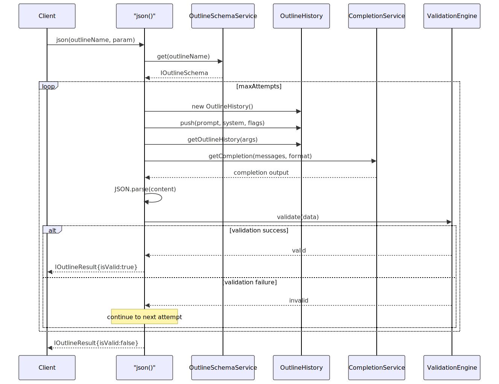

This document covers the agent-swarm-kit's JSON generation and structured output system, which enables AI agents to produce well-formatted, validated JSON responses according to predefined schemas. The system provides a framework for defining output formats, validating generated content, and ensuring consistency across multiple generation attempts.
For information about AI model integration and completion services, see Completion Adapters. For details about agent tool execution and function calling, see Model Context Protocol (MCP).
The JSON generation system is built around outline schemas that define the expected structure, validation rules, and generation parameters for structured outputs. Each outline schema specifies a target JSON format and the prompts needed to guide AI models in producing compliant responses.
The IOutlineSchema interface defines the complete configuration for JSON generation:
interface IOutlineSchema {
outlineName: OutlineName;
format: IOutlineFormat;
prompt: string | ((outlineName: OutlineName) => Promise<string> | string);
system?: string[] | ((outlineName: OutlineName) => Promise<string[]> | string[]);
completion: CompletionName;
validations?: IOutlineValidationFn[];
getOutlineHistory: (args: IOutlineArgs) => Promise<void>;
callbacks?: Partial<IOutlineCallbacks>;
}
The system supports two format types defined by IOutlineFormat:
Schema Format (IOutlineSchemaFormat): Full JSON schema specification
interface IOutlineSchemaFormat {
type: string;
json_schema: object;
}
Object Format (IOutlineObjectFormat): Simplified property-based definition
interface IOutlineObjectFormat {
type: string;
required: string[];
properties: {
[key: string]: {
type: string;
description: string;
enum?: string[];
};
};
}
The JSON generation system consists of several interconnected components that handle schema management, generation attempts, and validation.


The json function orchestrates the entire generation process through multiple attempts to produce valid structured output.

Each generation attempt follows this pattern:
OutlineHistory instance for each attemptgetOutlineHistory to add context-specific messagesThe OutlineSchemaService provides centralized management of outline schemas with support for context-specific registries and validation.

The service validates schemas on registration to ensure:
outlineName is a non-empty stringgetOutlineHistory is a callable functionvalidations array contains valid validation functions or objects// Schema validation example
private validateSchema(schema: IOutlineSchema): void {
if (!schema.outlineName || typeof schema.outlineName !== 'string') {
throw new Error('Invalid outlineName');
}
if (typeof schema.getOutlineHistory !== 'function') {
throw new Error('getOutlineHistory must be a function');
}
// Additional validation logic...
}
The validation system ensures generated JSON meets specified requirements through configurable validation functions.
type IOutlineValidationFn =
| ((args: IOutlineValidationArgs) => Promise<void> | void)
| {
validate: (args: IOutlineValidationArgs) => Promise<void> | void;
name?: string;
};
Each validation function receives:
attempt: Current attempt numberformat: Expected output formatparam: Input parametersdata: Parsed JSON datahistory: Message history for contextWhen validation fails or JSON parsing errors occur:
maxAttempts (default 5)IOutlineResult with isValid: false and error details// Error handling example from json function
try {
const data = JSON.parse(output.content) as IOutlineData;
// Run validations...
return { isValid: true, data, /* ... */ };
} catch (error) {
errorMessage = getErrorMessage(error);
console.error(`agent-swarm outline error outlineName=${outlineName}`, {
param, errorMessage
});
}
The JSON generation system integrates with the completion service architecture to leverage different AI providers and their specific capabilities.

The toJsonSchema helper function converts IOutlineObjectFormat to OpenAI-compatible JSON schema format:
export const toJsonSchema = (name: string, schema: IOutlineObjectFormat): IOutlineSchemaFormat => ({
type: "json_schema",
json_schema: {
name,
strict: true,
schema,
},
});
Different completion providers handle structured output differently:
json_schema format with strict validationobject format specificationThe system abstracts these differences through the completion service layer, allowing outline schemas to work consistently across providers.
The JSON generation system supports various usage patterns for different structured output requirements.
// Simple data extraction
const result = await json<UserData>("extract_user_info", {
text: "John Doe, age 30, works as engineer"
});
if (result.isValid) {
console.log(result.data); // Typed UserData object
}
// Multi-step validation with custom rules
const schema: IOutlineSchema = {
outlineName: "analyze_sentiment",
format: {
type: "object",
required: ["sentiment", "confidence", "keywords"],
properties: {
sentiment: { type: "string", enum: ["positive", "negative", "neutral"] },
confidence: { type: "number", description: "0-1 confidence score" },
keywords: { type: "array", description: "Key phrases" }
}
},
validations: [
// Confidence range validation
({ data }) => {
if (data.confidence < 0 || data.confidence > 1) {
throw new Error("Confidence must be 0-1");
}
},
// Keyword validation
{
name: "keyword_validator",
validate: ({ data }) => {
if (!Array.isArray(data.keywords) || data.keywords.length === 0) {
throw new Error("Keywords required");
}
}
}
]
};
// Dynamic history population
const schema: IOutlineSchema = {
outlineName: "contextual_analysis",
getOutlineHistory: async ({ param, history, attempt }) => {
// Add context based on input
await history.push({
role: "system",
content: `Context: ${param.context}`
});
// Add examples on retry attempts
if (attempt > 0) {
await history.push({
role: "system",
content: "Previous attempt failed. Here's an example..."
});
}
}
};